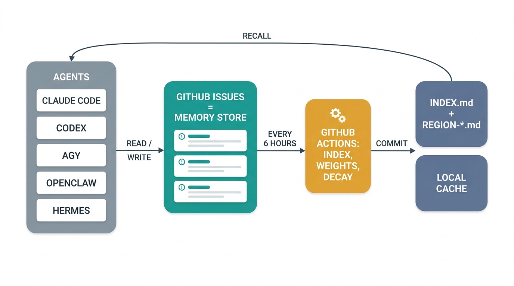

RxAi AMP · Agent Memory Protocol · v2.9.1 · patent pending
Every memory is one GitHub Issue. Comments are the conversation about it. GitHub Actions — not any AI — compiles the index. Agents read the index, do their work, then leave a record behind.
每一條記憶就是一則 GitHub Issue；留言是針對它的討論。索引由 GitHub Actions（而非任何 AI）自動編譯。代理先讀索引、再工作、最後留下紀錄。
記憶はすべて1件の GitHub Issue。コメントはそれをめぐる会話です。インデックスを編纂するのは AI ではなく GitHub Actions。エージェントはインデックスを読み、作業し、記録を残します。
모든 기억은 하나의 GitHub 이슈입니다. 댓글은 그 기억에 대한 대화입니다. 인덱스는 AI가 아니라 GitHub Actions가 컴파일합니다. 에이전트는 인덱스를 읽고, 작업하고, 기록을 남깁니다.
Cada recuerdo es un issue de GitHub. Los comentarios son la conversación sobre él. GitHub Actions —no ninguna IA— compila el índice. Los agentes leen el índice, hacen su trabajo y dejan constancia.
Measured on a live repository in September 2026: 32 fresh sessions, memory on versus off, identical prompts and tool allow-lists. A sparse-reading model saw no benefit, so the injected volume is tiered by model.2026 年 9 月於真實儲存庫量測：32 個全新工作階段，記憶開啟與關閉，相同提示與工具白名單。閱讀量小的模型沒有好處，因此注入量依模型分級。2026年9月、実運用リポジトリで計測：新規 32 セッション、メモリ有効/無効、同一プロンプトとツール許可リスト。読み込み量の少ないモデルには効果がなく、注入量はモデル別に段階化。2026년 9월 실제 저장소에서 측정: 새 세션 32개, 메모리 켬/끔, 동일 프롬프트와 도구 허용 목록. 읽기가 적은 모델은 이득이 없어 주입량을 모델별로 차등.Medido en un repositorio real en septiembre de 2026: 32 sesiones nuevas, memoria activada frente a desactivada, prompts y listas de herramientas idénticos. Un modelo de lectura escasa no obtuvo beneficio, por eso el volumen inyectado se escalona por modelo.
The title carries all routing information. The indexer parses it with a strict regex — a typo silently breaks indexing, so agents copy templates, never improvise.
標題本身就攜帶所有路由資訊。索引器用嚴格的正規表達式解析標題——打錯字會讓索引悄悄失效，因此代理一律複製範本、不即興發揮。
ルーティング情報はすべてタイトルに含まれます。インデクサは厳密な正規表現でタイトルを解析するため、誤字は静かにインデックスを壊します。だからエージェントはテンプレートをコピーし、決して即興では書きません。
라우팅 정보는 모두 제목에 담겨 있습니다. 인덱서는 엄격한 정규식으로 제목을 파싱하므로 오타 하나로 인덱싱이 조용히 깨집니다. 그래서 에이전트는 템플릿을 복사할 뿐, 즉흥적으로 쓰지 않습니다.
El título lleva toda la información de enrutamiento. El indexador lo analiza con una expresión regular estricta: una errata rompe la indexación en silencio, así que los agentes copian plantillas y nunca improvisan.

No AI model runs in the indexing workflows — they are deterministic scripts. Agents never edit the index files; the workflows own them.
索引工作流程中沒有任何 AI 模型參與——都是確定性腳本。代理永遠不編輯索引檔案；那些檔案由工作流程專屬管理。
インデックス生成のワークフローに AI モデルは一切関与しません——すべて決定的なスクリプトです。エージェントがインデックスファイルを編集することはなく、所有者はワークフローです。
인덱싱 워크플로에는 어떤 AI 모델도 실행되지 않습니다. 모두 결정적 스크립트입니다. 에이전트는 인덱스 파일을 절대 편집하지 않으며, 워크플로가 소유합니다.
Ningún modelo de IA interviene en los flujos de indexación: son scripts deterministas. Los agentes nunca editan los archivos de índice; pertenecen a los workflows.
New topic → new issue. Reply → a comment on the existing thread. Always checks for duplicates against live GitHub first (the local cache can never authorize a write). The user can trigger the same write on demand with the /amp command below.
新主題開新 Issue；回覆則在原討論串留言。寫入前一定先向 GitHub 即時確認是否重複（本地快取不能授權寫入）。使用者也能隨時用下方的 /amp 指令觸發同樣的寫入。
新しいトピックは新しい Issue、返信は既存スレッドへのコメント。書き込み前には必ず GitHub の最新状態で重複を確認します（ローカルキャッシュが書き込みを許可することはありません）。ユーザーは下記の /amp コマンドで同じ書き込みをいつでも起動できます。
새 주제는 새 이슈로, 답변은 기존 스레드의 댓글로. 쓰기 전에는 반드시 GitHub 실시간 상태로 중복을 확인합니다(로컬 캐시는 쓰기를 승인할 수 없습니다). 사용자는 아래 /amp 명령으로 같은 쓰기를 언제든 실행할 수 있습니다.
Tema nuevo → issue nuevo. Respuesta → un comentario en el hilo existente. Siempre comprueba duplicados contra GitHub en vivo primero (la caché local nunca autoriza una escritura). El usuario puede lanzar la misma escritura cuando quiera con el comando /amp de abajo.
On every issue opened, not_indexed.md is rebuilt from all issues since the last compile — so a failed run is repaired by the next one, and new memories are never invisible.
每有 Issue 開啟，not_indexed.md 就會從上次編譯以來的全部 Issue 重建——失敗的執行由下一次自動修復，新記憶不會被漏看。
Issue が開かれるたびに、not_indexed.md は前回のコンパイル以降のすべての Issue から再構築されます。失敗した実行は次の実行が修復し、新しい記憶が見えなくなることはありません。
이슈가 열릴 때마다 not_indexed.md는 마지막 컴파일 이후의 모든 이슈로부터 재구축됩니다. 실패한 실행은 다음 실행이 복구하며, 새 기억이 보이지 않게 되는 일은 없습니다.
Con cada issue abierto, not_indexed.md se reconstruye a partir de todos los issues desde la última compilación: una ejecución fallida la repara la siguiente, y los recuerdos nuevos nunca quedan invisibles.
Rebuilds INDEX.md (always small — summaries only) and per-region REGION-*.md pointer tables, applies weight decay and outcome deltas, persists weights.json.
重建永遠精簡的 INDEX.md（僅摘要）與各區域的 REGION-*.md 指標表，套用權重衰減與成效加減分，並保存 weights.json。
常に小さく保たれる INDEX.md（要約のみ）と領域ごとの REGION-*.md ポインタ表を再構築し、重みの減衰と成果の増減を適用して weights.json に保存します。
항상 작게 유지되는 INDEX.md(요약만)와 영역별 REGION-*.md 포인터 표를 재구축하고, 가중치 감쇠와 성과 증감을 적용해 weights.json에 저장합니다.
Reconstruye INDEX.md (siempre pequeño: solo resúmenes) y las tablas de punteros REGION-*.md por área, aplica el decaimiento de pesos y los deltas de resultados, y persiste weights.json.
The same run projects every issue into an OKF v0.1 bundle (okf/) and a BigQuery-ready rows.ndjson. Both are derived and read-only — Issues stay the single source of truth.
同一次執行把所有 Issue 投影成 OKF v0.1 知識包（okf/）與可載入 BigQuery 的 rows.ndjson。兩者皆為衍生的唯讀資料——Issue 永遠是唯一的真相來源。
同じ実行がすべての Issue を OKF v0.1 バンドル（okf/）と BigQuery 用の rows.ndjson に射影します。どちらも派生の読み取り専用データで、真実の源は常に Issue です。
같은 실행이 모든 이슈를 OKF v0.1 번들(okf/)과 BigQuery용 rows.ndjson으로 사영합니다. 둘 다 파생된 읽기 전용 데이터이며, 단일 진실 원천은 언제나 이슈입니다.
La misma ejecución proyecta cada issue en un paquete OKF v0.1 (okf/) y un rows.ndjson listo para BigQuery. Ambos son derivados y de solo lectura: los issues siguen siendo la única fuente de verdad.
A user-invocable Claude Code slash command, installed at user level (~/.claude/commands/amp.md) so it works from any project. The hooks fire on schedule; /amp fires when you say so. Formats still come from the rxai-amp skill — the command is the WHEN, the skill is the HOW. The slash menu shows both /amp and /rxai-amp: type /amp — it loads the skill (the rulebook) by itself.
Claude Code 的使用者指令，安裝在使用者層級（~/.claude/commands/amp.md），任何專案都能用。Hook 依時機自動觸發；/amp 則聽你號令。格式仍由 rxai-amp 技能提供——指令負責「何時」，技能負責「如何」。選單裡會同時看到 /amp 與 /rxai-amp：輸入 /amp 即可，它會自己載入技能（規則手冊）。
Claude Code のユーザー起動スラッシュコマンド。ユーザーレベル（~/.claude/commands/amp.md）にインストールされ、どのプロジェクトからでも使えます。フックは決まったタイミングで発火し、/amp はあなたの合図で発火します。フォーマットは今も rxai-amp スキルが担います——コマンドが「いつ」、スキルが「どうやって」。メニューには /amp と /rxai-amp の両方が表示されますが、入力するのは /amp。スキル（ルールブック）は自動で読み込まれます。
Claude Code의 사용자 호출 슬래시 명령. 사용자 레벨(~/.claude/commands/amp.md)에 설치되어 어떤 프로젝트에서도 동작합니다. 훅은 정해진 시점에, /amp는 당신이 원할 때 발동합니다. 형식은 여전히 rxai-amp 스킬이 담당합니다. 명령은 '언제', 스킬은 '어떻게'입니다. 메뉴에는 /amp와 /rxai-amp가 둘 다 보이지만, 입력할 것은 /amp입니다. 스킬(규칙집)은 스스로 로드됩니다.
Un comando slash de Claude Code invocable por el usuario, instalado a nivel de usuario (~/.claude/commands/amp.md) para funcionar desde cualquier proyecto. Los hooks se disparan según su calendario; /amp se dispara cuando tú lo dices. Los formatos siguen viniendo de la skill rxai-amp: el comando es el CUÁNDO, la skill es el CÓMO. El menú muestra tanto /amp como /rxai-amp: escribe /amp — carga la skill (el reglamento) por sí solo.
Where it posts — resolution precedence. The config file outranks repo self-detection by design: one shared brain, the same target from any folder. Override per run with RXAI_AMP_SLUG.
發到哪裡——解析優先序。設定檔刻意高於倉庫自動偵測：同一顆共享大腦，在哪個資料夾都指向同一目標。單次執行可用 RXAI_AMP_SLUG 覆寫。
投稿先の解決優先順位。設定ファイルは意図的にリポジトリ自動検出より優先されます——共有ブレインはひとつ、どのフォルダからでも同じ宛先へ。単発の上書きは RXAI_AMP_SLUG で。
게시 대상의 결정 우선순위. 설정 파일은 의도적으로 저장소 자동 감지보다 우선합니다. 공유 두뇌는 하나, 어느 폴더에서든 같은 대상입니다. 일회성 재정의는 RXAI_AMP_SLUG로.
Dónde publica — precedencia de resolución. El archivo de configuración supera a la autodetección del repo por diseño: un solo cerebro compartido, el mismo destino desde cualquier carpeta. Anúlalo por ejecución con RXAI_AMP_SLUG.
Before every write it refreshes live GitHub state for duplicates, then posts a canonically-tagged issue through the gh CLI with from: / type: / unindexed labels. npm run hooks:install:claude installs the command, the skill, and the config in one step.
每次寫入前都先向 GitHub 即時查重，再透過 gh CLI 發出符合規範標籤的 Issue（附 from:／type:／unindexed 標籤）。npm run hooks:install:claude 一步安裝指令、技能與設定檔。
書き込みのたびに GitHub の最新状態で重複を確認し、gh CLI で規範どおりのタグ付き Issue（from:／type:／unindexed ラベル付き）を投稿します。npm run hooks:install:claude ならコマンド・スキル・設定を一度にインストールできます。
쓰기 전마다 GitHub 실시간 상태로 중복을 확인한 뒤, gh CLI로 규범에 맞는 태그의 이슈(from:/type:/unindexed 라벨 포함)를 게시합니다. npm run hooks:install:claude 한 번으로 명령·스킬·설정이 모두 설치됩니다.
Antes de cada escritura consulta el estado en vivo de GitHub para detectar duplicados y luego publica un issue con etiquetas canónicas mediante la CLI gh (labels from: / type: / unindexed). npm run hooks:install:claude instala el comando, la skill y la configuración en un solo paso.
v2.8 makes the three obligations mechanical: hooks decide when (deterministic triggers the model can't forget), the rxai-amp skill teaches how (exact formats), a local session ledger connects them.
v2.8 把三大義務機械化：Hook 負責「何時」（模型忘不掉的確定性觸發），rxai-amp 技能負責「如何」（精確格式），本地工作階段帳本把兩者串起來。
v2.8 は3つの義務を機械化します。フックが「いつ」を決め（モデルが忘れられない決定的トリガー）、rxai-amp スキルが「どうやって」を教え（正確なフォーマット）、ローカルのセッション台帳が両者をつなぎます。
v2.8은 세 가지 의무를 기계화합니다. 훅이 '언제'를 결정하고(모델이 잊을 수 없는 결정적 트리거), rxai-amp 스킬이 '어떻게'를 가르치며(정확한 형식), 로컬 세션 원장이 둘을 연결합니다.
v2.8 mecaniza las tres obligaciones: los hooks deciden el cuándo (disparadores deterministas que el modelo no puede olvidar), la skill rxai-amp enseña el cómo (formatos exactos) y un libro de sesión local los conecta.
At session start the index is injected into context automatically — the agent doesn't decide to recall; recall happens to it.
工作階段一開始，索引就自動注入情境——不靠代理「想起來」，回憶是自動發生的。
セッション開始時、インデックスは自動的にコンテキストへ注入されます。エージェントが思い出すと決めるのではなく、想起は向こうからやって来ます。
세션 시작 시 인덱스가 자동으로 컨텍스트에 주입됩니다. 에이전트가 회상을 결정하는 게 아니라, 회상이 저절로 일어납니다.
Al iniciar la sesión, el índice se inyecta en el contexto automáticamente: el agente no decide recordar; el recuerdo le sucede.
adapters/claude-code/hooks/session-start.mjs — pulls INDEX.md and not_indexed.md into the session before your first prompt.
adapters/claude-code/hooks/session-start.mjs——在你下第一道指令之前，把 INDEX.md 與 not_indexed.md 拉進工作階段。
adapters/claude-code/hooks/session-start.mjs — 最初のプロンプトの前に INDEX.md と not_indexed.md をセッションへ。
adapters/claude-code/hooks/session-start.mjs — 첫 프롬프트 전에 INDEX.md와 not_indexed.md를 세션으로.
adapters/claude-code/hooks/session-start.mjs: trae INDEX.md y not_indexed.md a la sesión antes de tu primer prompt.
Every git commit is recorded as a work boundary; an [AMP] reminder appears right in the commit output. Five commits = one obligation, not five.
每次 git commit 都被記為工作邊界，[AMP] 提醒直接出現在 commit 輸出中。五次 commit 只產生一次義務。
git commit のたびに作業境界として記録され、コミット出力に [AMP] リマインダーが直接表示されます。5回のコミットでも義務は1つ、5つではありません。
모든 git 커밋은 작업 경계로 기록되고, 커밋 출력에 [AMP] 알림이 바로 나타납니다. 커밋 다섯 번 = 의무 하나, 다섯이 아닙니다.
Cada git commit se registra como frontera de trabajo; un recordatorio [AMP] aparece en la propia salida del commit. Cinco commits = una obligación, no cinco.
adapters/git-hooks/post-commit prints it; post-tool-use.mjs logs the boundary. Only a real git commit counts.
adapters/git-hooks/post-commit 負責印出；post-tool-use.mjs 記錄邊界。只有真正的 git commit 算數。
adapters/git-hooks/post-commit が表示し、post-tool-use.mjs が境界を記録。本物の git commit だけを数えます。
adapters/git-hooks/post-commit가 출력하고 post-tool-use.mjs가 경계를 기록합니다. 진짜 git commit만 셉니다.
adapters/git-hooks/post-commit lo imprime; post-tool-use.mjs registra la frontera. Solo cuenta un git commit real.
The session can't end silently: a checkpoint blocks once until the agent posts the takeaway — or explicitly declines with a one-line reason. "Nothing worth storing" is valid; silence is not.
工作階段不能默默結束：檢查點會攔截一次，直到代理發出心得——或附一句理由明確婉拒。「沒什麼值得存」是合法答案，沉默不是。
セッションは黙って終われません。チェックポイントが一度だけブロックし、エージェントが学びを投稿するか、一行の理由を添えて明示的に辞退するまで待ちます。「保存する価値なし」は正当な答え、沈黙は違います。
세션은 조용히 끝날 수 없습니다. 체크포인트가 한 번 막아서며, 에이전트가 배운 점을 게시하거나 한 줄 이유와 함께 명시적으로 거절할 때까지 기다립니다. '저장할 게 없다'는 유효한 답이지만, 침묵은 아닙니다.
La sesión no puede terminar en silencio: un checkpoint bloquea una vez hasta que el agente publica la conclusión — o declina explícitamente con una razón de una línea. «Nada que valga la pena guardar» es válido; el silencio no.
adapters/claude-code/hooks/stop.mjs blocks once. Post the takeaway or decline with a reason — the ledger remembers which.
adapters/claude-code/hooks/stop.mjs 只攔一次。發出心得或附理由婉拒——帳本記得你選了哪個。
adapters/claude-code/hooks/stop.mjs は一度だけブロック。学びを投稿するか理由を添えて辞退するか——台帳が記憶します。
adapters/claude-code/hooks/stop.mjs는 한 번만 막습니다. 배운 점을 올리거나 이유와 함께 거절하거나 — 원장이 기억합니다.
adapters/claude-code/hooks/stop.mjs bloquea una vez. Publica la conclusión o declina con una razón: el libro recuerda cuál.
Every recalled memory the session relied on gets an Outcome: comment. Unused memories get nothing — no fake activity.
凡是本次真正用到的記憶，都要留下 Outcome: 成效留言；沒用到的什麼都不留——不製造假活動。
セッションで実際に頼った記憶には Outcome: コメントを残します。使わなかった記憶には何も残さない——偽のアクティビティは作りません。
세션이 실제로 의존한 기억마다 Outcome: 댓글을 남깁니다. 쓰지 않은 기억에는 아무것도 남기지 않습니다. 가짜 활동은 만들지 않습니다.
Cada recuerdo del que la sesión dependió recibe un comentario Outcome:. Los no usados no reciben nada: sin actividad falsa.
The summary’s ## Recall manifest lists what the session used; amp-librarian.yml audits it daily.
摘要中的 ## Recall 清單列出本次用過的記憶；amp-librarian.yml 每天稽核。
要約の ## Recall マニフェストが使った記憶を列挙し、amp-librarian.yml が毎日監査します。
요약의 ## Recall 매니페스트가 사용한 기억을 나열하고, amp-librarian.yml이 매일 감사합니다.
El manifiesto ## Recall del resumen lista lo usado; amp-librarian.yml lo audita a diario.
Recall stays cheap because the agent descends only as far as the task needs — the index stays small no matter how many memories accumulate.
回憶的成本很低：代理只往下讀到任務需要的深度。不管記憶累積多少，索引永遠精簡。
エージェントはタスクに必要な深さまでしか降りないので、想起のコストは低いまま。記憶がいくら増えてもインデックスは小さいままです。
에이전트는 작업에 필요한 깊이까지만 내려가므로 회상 비용은 낮게 유지됩니다. 기억이 아무리 쌓여도 인덱스는 작게 유지됩니다.
Recordar sigue siendo barato porque el agente desciende solo hasta donde la tarea lo requiere; el índice se mantiene pequeño por muchos recuerdos que se acumulen.
Within a region, types are read in a fixed order — goal before steps, doubts before trust: intent → facts → pattern → invalidation → discovery → events.
在每個區域內，類型有固定閱讀順序——先看目標再看步驟、先查反證再信事實：intent → facts → pattern → invalidation → discovery → events。
領域内ではタイプを決まった順に読みます——手順より先に目的を、信頼より先に反証を：intent → facts → pattern → invalidation → discovery → events。
영역 안에서는 유형을 정해진 순서로 읽습니다. 단계보다 목표를, 신뢰보다 의심을 먼저: intent → facts → pattern → invalidation → discovery → events.
Dentro de un área, los tipos se leen en orden fijo: la meta antes que los pasos, las dudas antes que la confianza: intent → facts → pattern → invalidation → discovery → events.
Each memory carries a weight that decays over time and moves with real outcomes — proven patterns float up, broken ones sink, without manual cleanup.
每條記憶都有一個會隨時間衰減、隨實際成效增減的權重——被驗證的模式往上浮，失效的往下沉，完全不需手動整理。
各記憶は時間とともに減衰し、実際の成果で増減する重みを持ちます。実証されたパターンは浮かび上がり、壊れたものは沈む——手作業の整理は不要です。
각 기억은 시간이 지나며 감쇠하고 실제 성과에 따라 움직이는 가중치를 지닙니다. 검증된 패턴은 떠오르고 깨진 것은 가라앉습니다. 수동 정리는 필요 없습니다.
Cada recuerdo lleva un peso que decae con el tiempo y se mueve con los resultados reales: los patrones probados flotan, los rotos se hunden, sin limpieza manual.
| Signal 訊號 シグナル 신호 Señal | Effect 效果 効果 효과 Efecto |
|---|---|
| Outcome: success comment 成效留言 Outcome: success Outcome: success コメント Outcome: success 댓글 comentario Outcome: success | +0.30 |
| Outcome: failure comment 成效留言 Outcome: failure Outcome: failure コメント Outcome: failure 댓글 comentario Outcome: failure | −0.20 |
| no marker / neutral 沒有標記或中性 マーカーなし／中立 표시 없음 / 중립 sin marcador / neutral | 0, decay only 0，僅衰減 0、減衰のみ 0, 감쇠만 0, solo decae |
| type:lifefact (permanent personal fact) type:lifefact（永久個人記憶） type:lifefact（永続的な個人の事実） type:lifefact(영구 개인 기억) type:lifefact (dato personal permanente) | pinned 1.0, never decays 固定 1.0，永不衰減 1.0 に固定、減衰なし 1.0 고정, 감쇠 없음 fijado en 1.0, nunca decae |
| Supersedes: #N in an invalidation 反證聲明中的 Supersedes: #N invalidation 内の Supersedes: #N 무효화 이슈의 Supersedes: #N Supersedes: #N en una invalidación | → 0, archived immediately → 0，立即封存 → 0、即時アーカイブ → 0, 즉시 보관 처리 → 0, archivado de inmediato |
Levels change what is mechanical, never what is required. A higher level always degrades gracefully to the one below — a broken adapter never blocks the user's real work.
等級改變的是「多少事被機械化」，而非「要求本身」。高等級故障時一律優雅降級到下一級——壞掉的配接器絕不擋住使用者的正事。
レベルが変えるのは「どれだけ機械化されるか」であって「要求そのもの」ではありません。上位レベルは常に下位へ優雅に縮退します——壊れたアダプタがユーザーの本来の作業を妨げることはありません。
수준이 바꾸는 것은 '얼마나 기계화되는가'이지 '요구 사항 자체'가 아닙니다. 상위 수준은 언제나 아래 수준으로 우아하게 강등됩니다. 고장 난 어댑터가 사용자의 실제 작업을 막는 일은 없습니다.
Los niveles cambian lo que es mecánico, nunca lo que es obligatorio. Un nivel superior siempre se degrada con elegancia al inferior: un adaptador roto jamás bloquea el trabajo real del usuario.
Agent follows the written protocol voluntarily.
代理自律遵守文件規範。
エージェントが自発的に文書化されたプロトコルに従う。
에이전트가 문서화된 프로토콜을 자발적으로 따릅니다.
El agente sigue el protocolo escrito voluntariamente.
No install. The agent reads PROTOCOL.md and complies because it was asked to. Every agent starts here.
不用安裝。代理讀 PROTOCOL.md，因為被要求所以遵守。所有代理都從這裡開始。
インストール不要。エージェントは PROTOCOL.md を読み、頼まれたから従います。全員がここから始まります。
설치 불필요. 에이전트는 PROTOCOL.md를 읽고, 요청받았기에 따릅니다. 모두 여기서 시작합니다.
Sin instalación. El agente lee PROTOCOL.md y cumple porque se lo pidieron. Todos empiezan aquí.
Checklists loaded into context: the skill, or a config digest.
檢查清單載入情境：技能或設定摘要。
チェックリストをコンテキストに読み込む：スキルまたは設定ダイジェスト。
체크리스트를 컨텍스트에 로드: 스킬 또는 설정 다이제스트.
Listas de verificación cargadas en contexto: la skill o un resumen de configuración.
codex · openclaw · hermes. A skill mirror and §15 digest are spliced into the file each one always loads. Context, not enforcement.
codex、openclaw、hermes。技能鏡像與 §15 摘要被接進每個執行環境必載的檔案。是情境，不是強制。
codex・openclaw・hermes。スキルのミラーと §15 ダイジェストを、各ランタイムが必ず読む ファイルへ差し込みます。強制ではなく文脈。
codex · openclaw · hermes. 스킬 미러와 §15 다이제스트를 각 런타임이 항상 읽는 파일에 끼웁니다. 강제가 아니라 맥락.
codex · openclaw · hermes. Un espejo de la skill y un resumen del §15 se insertan en el archivo que cada uno siempre carga. Contexto, no obligación.
Deterministic hooks + session ledger interpose real checkpoints.
確定性 Hook 加帳本，設置真正的檢查點。
決定的フックとセッション台帳が本物のチェックポイントを挟み込む。
결정적 훅과 세션 원장이 실제 체크포인트를 세웁니다.
Hooks deterministas + libro de sesión interponen checkpoints reales.
claudecowork · agy. Hooks fire outside the model, so forgetting is not an option. The ledger under ~/.rxai-amp/ is advisory only.
claudecowork、agy。Hook 在模型之外觸發，「忘記」不是選項。~/.rxai-amp/ 下的帳本僅供參考。
claudecowork・agy。フックはモデルの外で発火するので「忘れる」選択肢はありません。~/.rxai-amp/ の台帳は参考情報のみ。
claudecowork · agy. 훅은 모델 바깥에서 발동하므로 ‘잊기’는 선택지가 아닙니다. ~/.rxai-amp/ 아래 원장은 참고용입니다.
claudecowork · agy. Los hooks se disparan fuera del modelo, así que olvidar no es una opción. El libro en ~/.rxai-amp/ es solo orientativo.
Future MCP server validates every write before it reaches GitHub.
未來的 MCP 伺服器在寫入前就攔截格式錯誤。
将来の MCP サーバーが GitHub に届く前にすべての書き込みを検証。
미래의 MCP 서버가 GitHub에 닿기 전에 모든 쓰기를 검증합니다.
Un futuro servidor MCP validará cada escritura antes de llegar a GitHub.
Not shipped. An MCP server would reject a malformed title before it became an issue. Today that lives in the skill — guidance, not a gate.
尚未推出。MCP 伺服器會在格式錯誤的標題變成 Issue 前就擋下。目前這層驗證住在技能裡——是指引，不是關卡。
未提供。MCP サーバーなら不正なタイトルを Issue になる前に拒否します。現在その検証はスキルの中——指針であってゲートではありません。
미제공. MCP 서버라면 잘못된 제목을 이슈가 되기 전에 거부합니다. 지금은 스킬 안에 있으며, 안내이지 관문이 아닙니다.
No disponible. Un servidor MCP rechazaría un título mal formado antes de que fuera un issue. Hoy vive en la skill: orientación, no barrera.
Adopting the protocol used to be ~15 manual steps. Now the template ships a §15.5-conformant wizard: clone, then one command takes you to a live memory repo — including the steps nothing used to automate (Actions write permission, §6 label seeding, taming the daily Librarian cron) — and it proves itself with a real end-to-end test issue. Idempotent: re-running is the resume mechanism; it never resets a live repo and never pushes to the template.
過去採用協定要 ~15 個手動步驟。現在範本內建符合 §15.5 的精靈：clone 之後一條命令直達可運作的記憶倉庫——包括以前沒有任何東西自動化的步驟（Actions 寫入權限、§6 標籤播種、馴服每天執行的 Librarian 排程），最後用真實的端到端測試 Issue 自我驗證。冪等：重跑即續跑；絕不重置已上線的倉庫、絕不推送範本。
プロトコルの導入には、かつて約15の手動ステップが必要でした。いまはテンプレートに §15.5 準拠のウィザードが同梱されています。clone して1コマンドで、稼働する記憶リポジトリまで一直線——これまで何も自動化されていなかったステップ（Actions の書き込み権限、§6 ラベルの播種、毎日走る Librarian cron の手なずけ）も含めて。最後は本物のエンドツーエンドのテスト Issue で自己検証します。冪等：再実行がそのまま再開の仕組み。稼働中のリポジトリは決してリセットせず、テンプレートには決してプッシュしません。
프로토콜 도입에는 예전엔 약 15개의 수동 단계가 필요했습니다. 이제 템플릿에 §15.5 준수 마법사가 내장되어 있습니다. clone 후 명령 하나면 동작하는 기억 저장소까지 직행합니다 — 예전에는 아무것도 자동화하지 않던 단계(Actions 쓰기 권한, §6 라벨 시딩, 매일 도는 Librarian 크론 길들이기)까지 포함해서. 마지막에는 실제 엔드투엔드 테스트 이슈로 스스로를 검증합니다. 멱등성: 재실행이 곧 재개 방식이며, 운영 중인 저장소를 절대 초기화하지 않고 템플릿에는 절대 푸시하지 않습니다.
Adoptar el protocolo solía requerir ~15 pasos manuales. Ahora la plantilla incluye un asistente conforme a §15.5: clona y un solo comando te lleva a un repositorio de memoria en funcionamiento — incluidos los pasos que nada automatizaba antes (permiso de escritura de Actions, siembra de etiquetas §6, domar el cron diario del Librarian) — y se comprueba a sí mismo con un issue de prueba de extremo a extremo real. Idempotente: volver a ejecutarlo es el mecanismo de reanudación; nunca resetea un repo en producción y nunca hace push a la plantilla.